高级用法
概念
在上一节中，我提到了一些关键概念，这里我将详细描述它们，以便您更好地理解后续操作。
容器
首先是 容器 (Container)，它最容易描述，您可以将其想象为一个场景，或一个求解器容器。它是承载所有内容的舞台。
图层
其次是 图层 (Layer)，它表示同一容器中同一对象在不同位置的不同数据字段。就像任何地图应用中的视图图层，一个显示道路，一个显示卫星图，而在 Bioxel 中，一个显示 MRI，一个显示 CT，一个显示电信号等。有些图层用于材质，如颜色、密度等，我们称它们为 材质图层 (Material Layer)。一个容器包含同一对象的不同图层。任何导入容器的外部数据都会转换为图层。
组件
最后是 组件 (Component)，它是 材质图层 的一个片段。同一区域中可能存在多个具有不同呈现意义的材质（物质），就像 Blender 中的对象，每个代表场景的一部分。Bioxel Nodes 提供了一系列节点和工具，允许用户基于其他图层（作为源数据）创建材质图层（组件）。在上一节中，我们使用 CT 数据（图层）来制作颅骨的材质（物质），这个过程称为材质化 (materialization)。
将肌肉附着到颅骨
一个容器中可以存在多个组件，就像一个场景中可以存在多个对象一样。它们可以单独控制，也可以相互组合以构建复杂的场景。接下来，让我们从 VHP 解剖图像中提取肌肉，并将其附着到上一节创建的颅骨上。解剖图像非常大，为了便于使用，我将其裁剪并缩放到原始大小的 1/4。下载文件并解压到新文件夹。
VHP_M_AnatomicalImages_Head.zip
您也可以直接从官方网站下载数据：https://data.lhncbc.nlm.nih.gov/public/Visible-Human/Male-Images/PNG_format/head/index.html
首先按分步指南中所述导入 CT 数据。然后导入解剖图像，但与之前不同的是，这次从现有容器的几何节点菜单（不是顶部菜单）中点击 Bioxel Nodes > Import Volumetric Data (Init) > as Color，定位到解压后的文件夹，选择任意一个 .png 文件（不要多选，也不要选择文件夹）。这样导入的图层将与之前的 CT 数据位于同一容器中。您也可以通过将其拖入容器几何节点界面而不是 3D 视图界面来导入。另外请注意，点击的是 as Color（而不是 as Scalar），因为解剖图像是 RGB 数据。
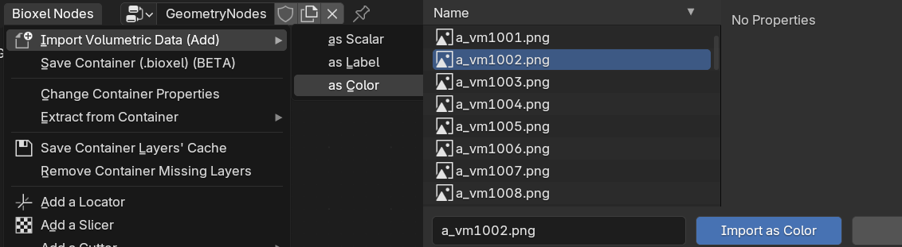
这次让我们在导入选项上多花点时间。首先谈谈选项中的 Original Spacing 是什么，您可以简单地将其理解为图像的原始"像素大小"。由于体数据是 3D 的，其像素（即体素）是长方体而不是 2D 矩形，它们有长度、宽度和高度，这就是 Spacing。
通常，Bioxel Nodes 可以从数据头文件中读取间距，您不需要填写该值，但任何 PNG 图像都没有记录该信息，因此您需要手动输入。在 VHP 的官方说明中，解剖图像的每个像素对应 0.33mm 的大小，每个切片的厚度为 1mm，因此解剖图像的 Original Spacing 应设置为 (0.33, 0.33, 1)。
但是，我提供的文件已将每个图像缩放了 1/4，因此 X 和 Y 轴需要乘以 4。所以最终的 Original Spacing 应设置为 (1.33, 1.33, 1)，这应该很容易理解，对吧？（如果您导入的是官方文件，则仍应设置为 (0.33, 0.33, 1)）
Layer Name 应设置为 "Anatomical Images"，其他选项保持默认，点击确定。
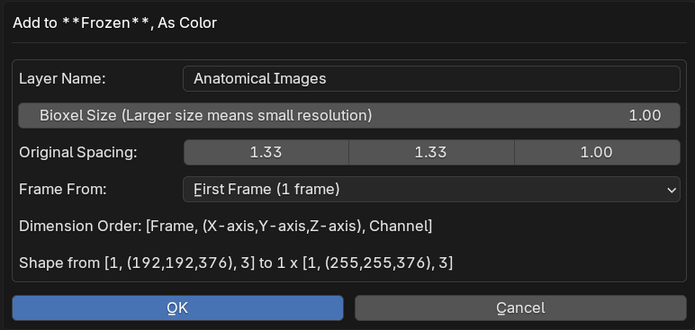
导入完成后，在新创建的 "Fetch Layer" 节点之后连接 "Cutout by Hue" 节点（Add > Bioxel Nodes > Component > Cutout by Hue），并打开 Slice Viewer 模式预览，如下图所示。
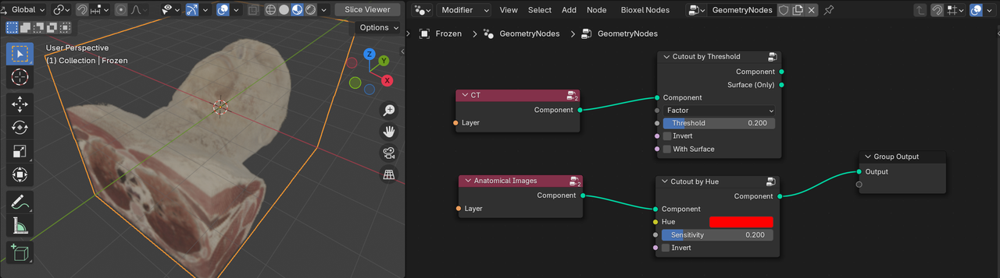
除了间距，Dicom 文件还记录了对象的位置和方向，但这些信息显然没有记录在 PNG 格式中。这导致 CT 数据和解剖图像在位置上不匹配。我们需要手动对齐这两个图层：首先，将 "Cutout by Threshold" 节点的阈值设置为 0.2，以便可以提取并显示完整的头部。然后在 "Cutout by Hue" 节点和 "Cutout by Threshold" 节点之前各添加一个 "ReCenter" 节点，然后在"解剖图像"工作流程中添加 Locater（详见分步指南），最后添加 "Join Component" 节点（Add > Bioxel Nodes > Component > Join Component），并按如下图所示连接和设置参数。
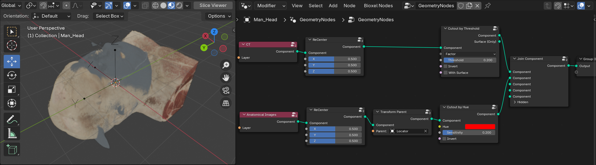
"Join Component" 节点允许您将两个组件合并在一起。移动和旋转 Locater 对象，使两个组件的位置完全一致。如果您难以对齐，以下是 Locater 对象属性的精确变换值。
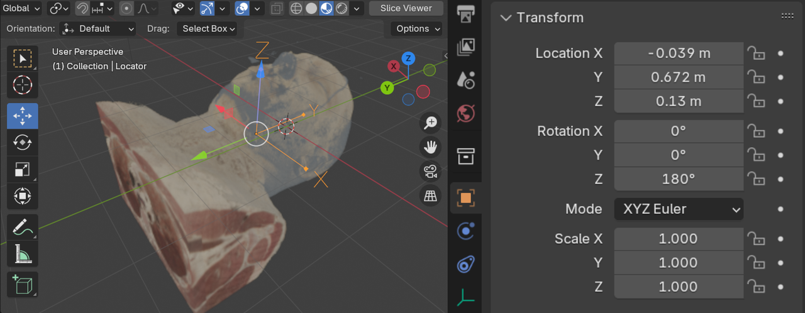
接下来让我们分别提取肌肉。
首先谈谈 "Cutout by Hue" 节点。它的名称表明通过颜色色调提取区域。如果您选择此节点并按 "M" 键暂时静音它，您会看到数据在 Slice Viewer 模式下变成一个带有蓝色部分的立方体。"Cutout by Hue" 节点的默认 Hue 值是红色，这意味着该节点保留接近红色的区域，并去除蓝色（它在色调环上与红色相对），留下人体部分。
如果调低 Sensitivity 的值，您会看到可见部分减少，只留下更接近红色的部分，而肌肉恰好是红色的，因此我们可以轻松提取肌肉。标本组织的颜色不如活体状态那样鲜艳，我们可以使用 "Set Color by Color" 节点（Add > Bioxel Nodes > Property > Set Color by Color）来微调颜色以恢复活力。
最后，按如下图所示连接和设置节点，其中 "Set Color by Ramp 2" 节点中的两个颜色是 E7D2C5 和 FFEDEC。如果一切正常，您将获得如下图所示的渲染结果。
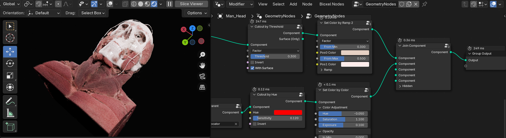
您还可以在末尾和所有组件上添加 "Transform" 和 "Cutter" 节点。
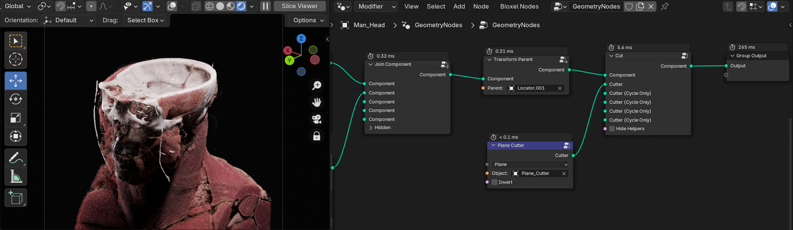
VHP 的多模态数据没有任何变形或缩放差异，只有位置差异，因此所有数据都可以轻松对齐。然而，在大多数情况下，不同模态之间的差异非常大，需要先进行配准，目前 Bioxel Nodes 尚不支持（但在计划中）。尽管如此，您可以基于同一图层构建不同的组件并将它们组合在一起。例如，基于 CT 数据，使用 "Cutout by Range" 节点可以消除低值区域（脂肪），消除高值区域（骨骼），仍能得到肌肉。然后将其附着到颅骨上。
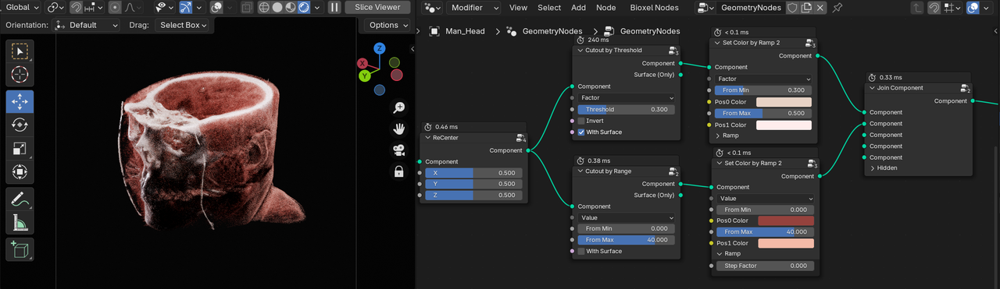
然而，大脑和肌肉的 CT 值非常接近，因此通过阈值将大脑与肌肉分离极其困难。那么应该如何提取大脑呢？
提取大脑
我们可以使用 AI 技术来实现大脑区域的划分，这个过程称为分割 (Segmentation)，大脑区域称为标签 (Label)。医学图像分割有很多模型和方法，这里推荐 Total Segmentator。
这是一个开箱即用的 CT/MRI 医学图像分割 Python 库。您可以在本地部署 Total Segmentator，也可以通过官方在线网站 https://totalsegmentator.com 处理您的数据。
让我演示一下操作，我们仍然使用 VHP 的 CT 数据。点击 "Drop DICOM.zip or..." 并选择 VHP_M_CT_Head.zip 文件。在 "Selected task" 下方输入 "brain"，按 Enter 确认。最后点击 "Process data" 按钮。
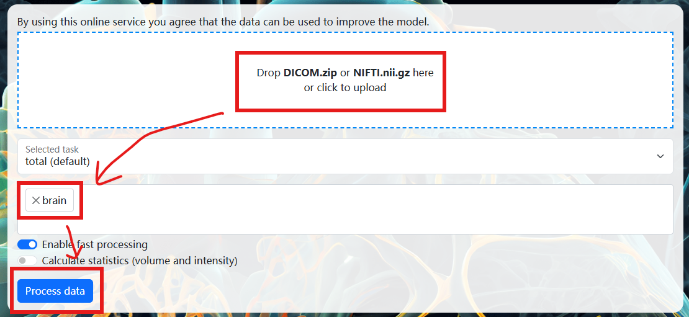
等待上传和处理，之后您将被重定向到以下页面，点击 "Download results" 按钮，下载并解压 segmentations.zip 到任意文件夹。
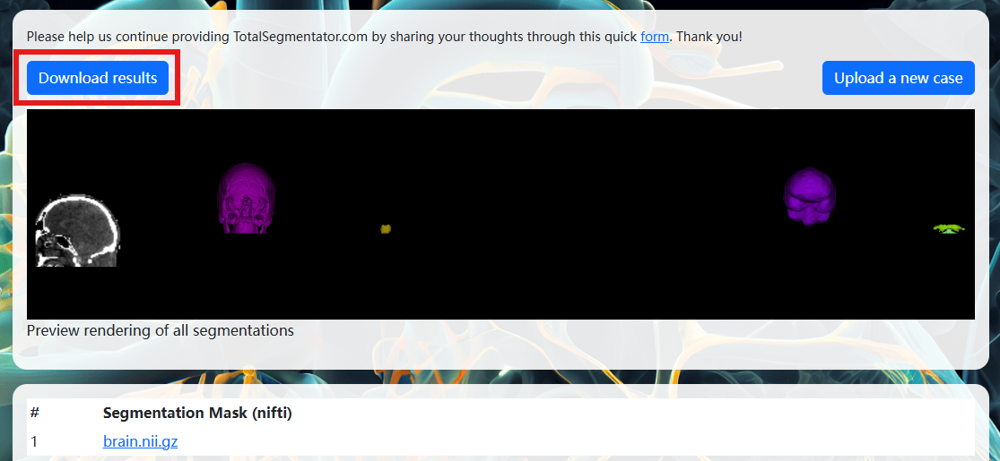
如果您无法获取大脑分割（标签），可以直接下载（无需解压）。
接下来，我们以与导入解剖图像相同的方式将大脑分割（标签）导入到容器中（在同一容器下），但这次选择 as Label，Layer Name 设置为 "Brain"，其他选项保持默认。导入完成后，会添加一个新的 "Fetch Layer" 节点。按如下图所示创建和设置节点，您应该能够看到大脑表面。
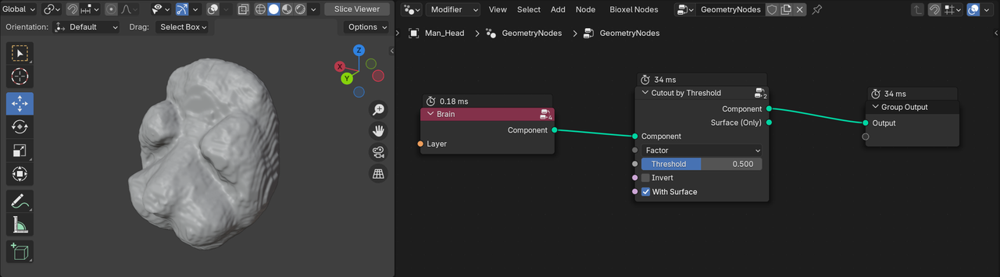
您看到表面上有"台阶"状的形状了吗？这是因为 AI 分割结果精度较低。那么如何解决这个问题？选择大脑标签的 Fetch Layer 节点，右键弹出菜单，点击 Bioxel Nodes > Resample Value，在对话框中，将 "Smooth Size" 更改为 3 或更高（数值越高，计算越慢），点击确定并等待计算完成。完成后，会添加一个新的图层，替换原来的图层，它更平滑了吗？下图列出了不同平滑级别的效果。
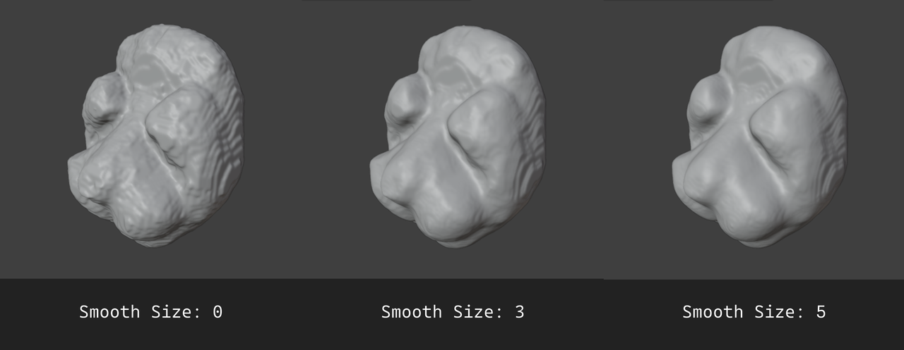
越平滑，看起来越舒服，但这也意味着丢失更多细节，计算也更慢。
但是，如果您切开大脑，会发现截面是均匀的，这是因为标签类型图层本身不包含任何模态数据。Bioxel Nodes 提供了一种通过标签填充任意图层值的功能，如果您将 CT 数据中非大脑区域的脑组织值设置得低于大脑组织的 Hu 值，那么任何 "Cutout" 节点将只保留大脑区域。
操作如下：选择 CT 数据的 "Fetch Layer" 节点，右键弹出菜单，点击 Bioxel Nodes > Fill Value by Label，在对话框中，Label 设置为新导入的大脑标签图层，Fill Value 设置为 -100（只要小于大脑组织的 Hu 值即可），点击确定。等待数据处理，完成后会向容器添加一个新的数据图层。
如下图所示，连接节点并设置节点参数，其中 "Set Color by Ramp 2" 节点的两个颜色是 B26267 和 EBC5B7，"Cutout by Range" 和 "Set Color by Ramp 2" 节点改为 "Value" 模式（默认是 "Factor" 模式），因为大脑的最大值和最小值太接近，在 "Factor" 模式下难以调整。为了使脑组织看起来更透明，我在末尾添加了 "Set Properties"（Add > Bioxel Nodes > Property > Set Properties）节点并将 "Density" 改为 0.5。
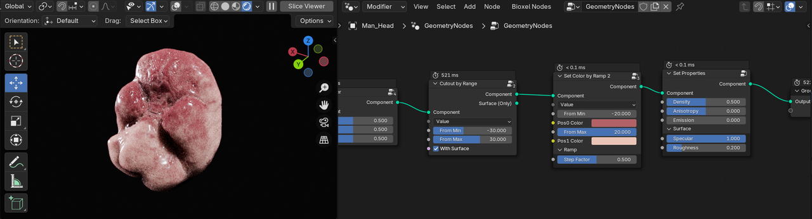
（仍然觉得不够平滑？目前很难完全摆脱"台阶"表面。）
现在大脑完成了。最后，我们将所有内容组合在一起，您将得到如下图所示的结果。
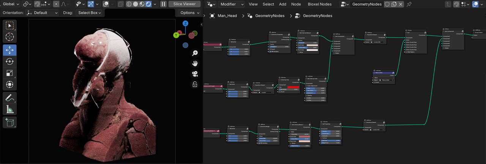
如果您按照文档走到了这一步，为自己鼓掌吧，您已经掌握了这个插件！如果您按照文档操作有困难，可以下载项目文件来理解节点的工作方式。
AI 分割是体数据可视化的重要组成部分。因此，未来的 Bioxel Nodes 将集成一些常用的 AI 分割模型，让用户可以就地完成体数据可视化！